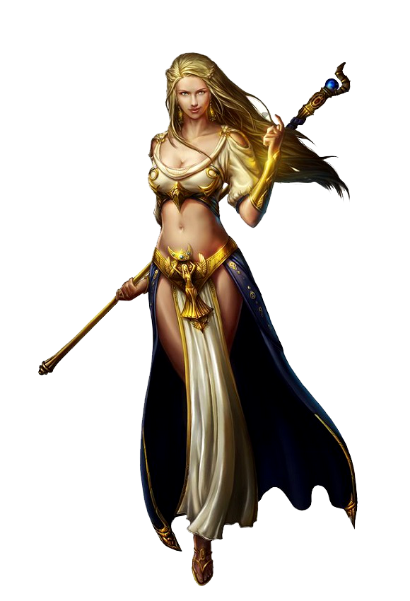

<ion-header>
    <ion-navbar>
        <ion-title>Create A Character</ion-title>
    </ion-navbar>
</ion-header>

<ion-content>
    <ion-row class="section full">
        <ion-col class="phb">
            <ion-row class="">
                &nbsp;
            </ion-row>
            <ion-row>
                <ion-col>
                    <ion-row>
                        <ion-col>
                            <h1>Tell us your story..</h1>
                        </ion-col>
                    </ion-row>
                    <ion-row>
                        <ion-col>
                            <h5>
                                You there wanderer. What is your name?
                            </h5>
                        </ion-col>
                    </ion-row>
                    <ion-row>
                        <ion-col>
                            <ion-item>
                                <ion-label fixed>
                                    <h2>
                                        Name:
                                    </h2>
                                </ion-label>
                                <ion-input type="text" value=""></ion-input>
                            </ion-item>
                        </ion-col>
                    </ion-row>
                </ion-col>
                <ion-col>
                    <!--<blockquote cite="">
                        Barbarian. Bard. Druid. Monk. Paladin. Ranger. Sorcerer. Warlock.
                    </blockquote>-->
                </ion-col>
            </ion-row>
            <ion-row>
                <ion-col></ion-col>
                <ion-col>
                    <ion-row>
                        
                    </ion-row>
                </ion-col>
            </ion-row>
        </ion-col>
    </ion-row>
</ion-content>
<ion-footer>
    <ion-tabs>
        <ion-tab tabIcon="heart" [root]="tab1"></ion-tab>
        <ion-tab tabIcon="star" [root]="tab2"></ion-tab>
    </ion-tabs>`
</ion-footer>